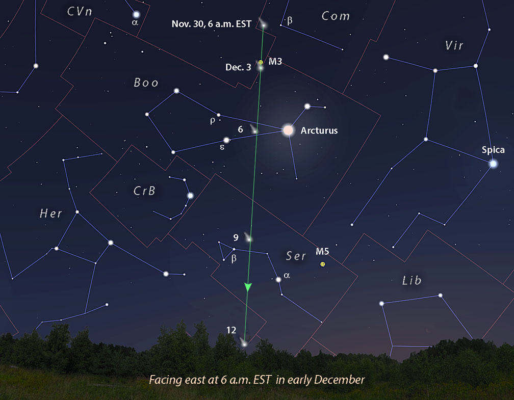
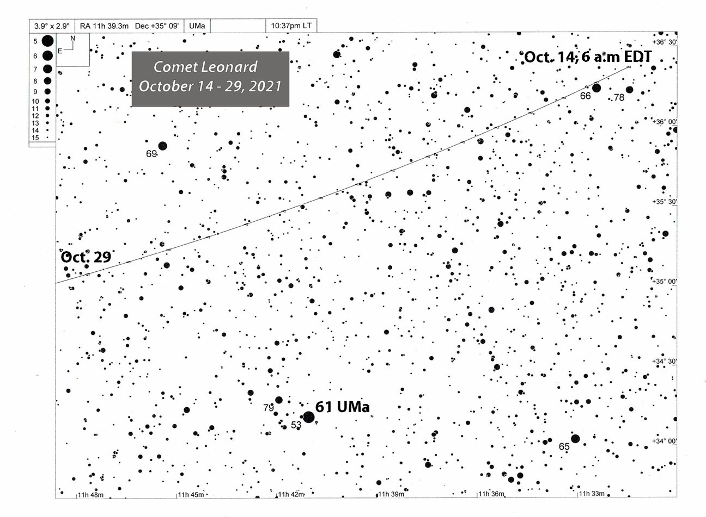

Predicting a newly discovered comet's brightness is no easy business. Astronomers often use the power-law formula to make visibility forecasts, but an equation can fail to account for a comet's essential unpredictability. Not only do these fragile, icy fossils experience surprise outbursts and disintegrations, but their luster can vary radically depending on something as simple as viewing angle.
With this in mind, let's take a look at the upcoming apparition of Comet Leonard (C/2021 A1). Senior research specialist Greg Leonard at Mt. Lemmon Observatory discovered the 19th-magnitude speck on January 3, 2021, exactly one year before perihelion. Orbital calculations revealed that the object had spent the last 35,000 years wending its way sunward after reaching aphelion at the chilling distance of around 3,500 a.u. Comet Leonard will pass nearest the Sun again on January 3, 2022, at 0.62 a.u. Two weeks before that on December 12th, it makes its closest approach to Earth at 34.9 million kilometers.
It's good news that Comet Leonard's been around the block before. That trip and perhaps others in the remote past allowed its most volatile ices to vaporize. First-time comets often become unusually bright even at great distances as fresh ice sublimates in a frenzy. This can artificially inflate their predicted brightness during solar approach and lead to unrealistic expectations. Often, these early outbursts simply fizzle out, and a lackluster apparition follows. Pre-baked as it were, Comet Leonard's brightness predictions may be more reliable.
Last year, Comet NEOWISE (C/2020 F3) blossomed into a magnificent sight, becoming the brightest comet to decorate the sky since McNaught (C/2006 P1) in 2007. This year has seen a dearth of naked-eye objects, the reason so many of us are looking forward to Comet Leonard, which may top out at magnitude 4 or brighter come December.
In mid-October, the comet glows around magnitude 12 in southern Ursa Major and stands almost 30° high at the start of morning twilight for observers at mid-northern latitudes. It slowly heads east, crossing into Canes Venatici on November 11th and Coma Berenices later that month, while continuing to brighten. By mid-November the comet may reach magnitude 10, putting it within range of a 6-inch telescope. At month's end it should be easily visible in 50-mm binoculars around 7th magnitude.
Things really heat up in December. Leonard passes about 1.5° west of the bright globular cluster M3 on December 2nd and about 1° to its east on the 3rd, then dashes some 5° north of Arcturus on the 6th. Early in the month it should hover near magnitude 5.5 and become a faint naked-eye object. Having Arcturus nearby will make it easy for less experienced observers to find and follow the comet.
Observers may get their last peek at Leonard steeped in morning twilight on December 12th — and near peak brightness — before it transitions into the evening sky. Fortunately, the Moon will be absent throughout the best part of its morning apparition.
From mid-December onward, Comet Leonard fades while remaining stubbornly low in the southwestern sky at dusk for mid-northern observers. Meanwhile, conditions improve for Southern Hemisphere skywatchers as the comet's solar elongation increases. Powering across Sagittarius and Microscopium, it ends the year at 6th magnitude in Piscis Austrinus.
Right now, Leonard sports a small but lush dust tail. If its dust production rate climbs in the coming weeks as the comet approaches the Sun and becomes more active, two special circumstances — an orbital plane crossing and a high phase angle — may boost its brightness above predictions.
Amateur astronomer Michael Mattiazzo, creator of the Southern Comets Homepage, notes that on December 8th Earth will cross the orbital plane of the comet. Northern Hemisphere observers will then view the tail and dusty trail of Leonard edge-on, which should cause the tail to narrow and brighten a bit as the cometary particles stack up across its length, much the same way we see the thick band of the Milky Way from our viewpoint within the galactic plane.
Observers should also be keen to look for an antitail, a narrow, spike-like appendage pointing in the direction opposite that of the tail. Antitails form when we view larger cometary dust particles deposited along the comet's orbit edge-on.
Tantalizingly, Comet Leonard's phase angle (Sun-comet-Earth angle) may play a crucial role in elevating its brightness during much of December. The larger the angle — up to a maximum of 180° — the more nearly in line the comet is with the Sun. Sunlight shining through a cloud of fine particles like comet dust is scattered forward toward the observer. We see the same effect in steamy breath on a cold day, contrails, and cloud edges.